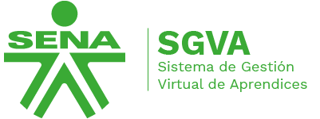

Si vas a hacer tu etapa práctica en una empresa, necesitas conocer Caprendizaje. Esta guía te explica qué es, para qué sirve y cómo usarla paso a paso, desde el ingreso hasta la búsqueda de empresa.

Caprendizaje es el Sistema de Gestión Virtual de Aprendices (SGVA), una página web del SENA que conecta a los aprendices con las empresas.
Desde allí puedes buscar empresas, postularte a sus ofertas y gestionar tu contrato de aprendizaje. La dirección oficial es caprendizaje.sena.edu.co.
Es una modalidad especial en la que te formas dentro de una empresa y practicas lo que aprendiste en el SENA. Así conectas la teoría con la experiencia en un trabajo real.
Recuerda que este contrato no es un sueldo, sino un apoyo de sostenimiento mientras haces tu práctica. Por eso la empresa no te paga prestaciones como cesantías o vacaciones.
La página tiene dos tipos de usuarios. Los aprendices buscan una empresa que los patrocine y se postulan a las ofertas.
Las empresas deben crear un usuario con la opción "Crear Usuario", publicar sus ofertas y registrar el contrato. También pueden solicitar la carta de presentación del aprendiz.
En la pantalla de ingreso debes elegir la opción que corresponde a tu caso. Si eres aprendiz, escoge "Aprendices".
Antes de ingresar, verifica que cumples lo siguiente:
Sigue estos pasos en orden:
¿Puedo cambiar mi información después de ingresar? Sí. Los aprendices pueden modificar su perfil dentro de la plataforma.
¿Qué hago si no consigo contrato? Puedes seguir postulándote a nuevas ofertas, porque las empresas publican oportunidades con frecuencia.
¿Debo hacer algún trámite antes de ingresar? En algunos centros de formación se pide entregar un formato al instructor al inicio del programa. Pregúntale al tuyo cómo se hace en tu centro.
Mantén tu perfil completo y actualizado, porque las empresas lo revisan antes de elegir. Postúlate a varias ofertas y no esperes a una sola respuesta.
Revisa la plataforma con frecuencia para no perder las fechas de las ofertas. Si tienes dudas sobre el proceso, consulta a tu instructor, ya que algunos trámites pueden variar según el centro de formación.
Para ingresar directamente a la plataforma oficial, usa este enlace: